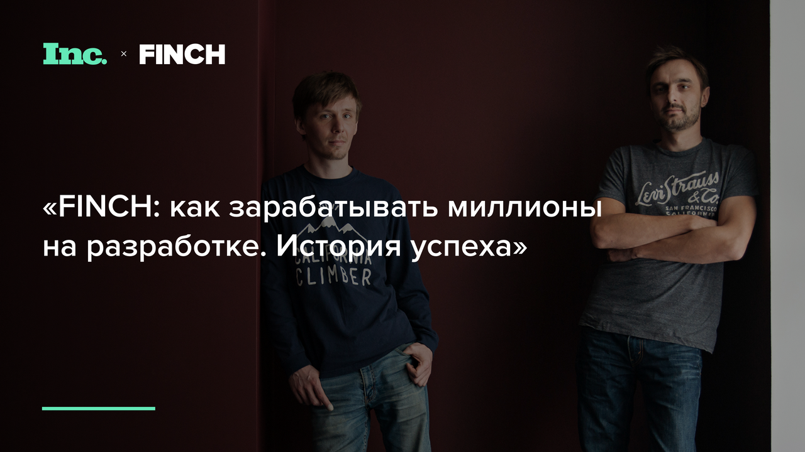

Inc. Russia. История успеха компании FINCH
«На самом деле мы занимаемся не бизнесом, — говорит основатель студии разработки Finch 34-летний Дмитрий Щипачев. — Я это все как бизнес не воспринимаю. Единственная метафора, которую я смог придумать, чтобы описать то, чем мы занимаемся — высокооплачиваемый экстремальный спорт. По сути, мы себя развлекаем с большими рисками и за большие деньги. Просто потому, что нам это нравится»
Большие риски — это работа с такими клиентами, как ВГТРК или футбольный клуб «Спартак», контракты с которыми приносят прибыль, а незапланированное расставание (иногда из-за того, что клиенты не понимают, как зарабатывать на приложении, которое для них сделала студия) приводит к кассовым разрывам. Несколько лет назад, вспоминает Щипачев, ему пришлось продать машину, чтобы вовремя заплатить сотрудникам (себе он иногда и вовсе не платил).
Другой риск — побочные результаты разработки продуктов для проектов, привлекающих массовую аудиторию: так, с сайта «Дома-2» команда разработчика убирала гифки в виде членов, запущенные хакерами. Зато основатель Finch избежал самого страшного риска предпринимателя — скуки.
Как все началось?
Когда в 2006 году Щипачев устраивался программистом в digital-агентство Actis Wunderman, он сразу предупредил: «Долго я у вас не проработаю — станет скучно». До этого он полтора года работал в США, приехал в Россию для найма удаленных сотрудников — и решил остаться. А через три месяца, все еще будучи штатным сотрудником, начал собирать команду, чтобы открыть свою студию разработки. «Я ничего не знал о бизнесе. Что может знать 22-летний студент без диплома, с опытом работы 1,5 года?»
Партнером по бизнесу стал Дмитрий Хайретдинов, с которым Щипачев сотрудничал по одному из проектов — тот учился на третьем курсе Бауманки, работал ведущим программистом в креативном агентстве Deluxe и «был единственным в Москве, кто владел технологией adobe flex» (репутацию помогало поддерживать участие в профессиональном ЖЖ-сообществе ru_flex). Название Finch&Melrose взяли в честь Мелроуз-авеню, на котором Щипачев жил в Лос-Анджелесе, и случайного слова с рекламного щита, — авеню впоследствии «отвалилось», осталось короткое и звучное Finch.
Первыми сотрудниками стали одногруппники Хайретдинова, первым офисом — квартира бабушки Щипачева, а первыми клиентами — его бывшие работодатели. В том числе Actis Wunderman, которые пригласили Finch субподрядчиком в проект по созданию сайта «Дома-2», передачи на телеканале ТНТ — это был первый из многомиллионных контрактов студии.
Эксперименты от flash до подгузников
Изначально специализацией Finch были сложные сайты на flash (среди клиентов — крупные креативные агентства вроде Grape и Red Keds; в числе заказов — сайты для брендов Kent, Vоgue, Miller, веб-интерфейс для внутреннего пользования сотрудниками «X5 Retail Group»). Но когда бывшие коллеги из Actis Wunderman предложили Finch выполнить техническую часть работы над сайтом «Дома-2», пришлось решать задачи, связанные с высокими нагрузками и безопасностью: сайт стал излюбленной мишенью для хакеров всех возрастов. «Однажды они за ночь зарегистрировали десятки тысяч ботов, чтобы накрутить голоса своему кандидату в очередном конкурсе ,— мы забанили всех под утро одним запросом и ввели смс-подтверждение регистрации, — вспоминает Щипачев. — В другой раз угнали или купили пароль какого-то модератора с доступом в CMS и через систему размещения баннеров обвешали всю главную страницу сайта гиф-членами»
Оценив работу над сайтом «Дома-2», заказчик (телеканал ТНТ) обратился к Finch для разработки мобильного приложения «ТНТ-Клуб» с собственной программой лояльности — пришлось разбираться и в этом. «Мы движемся от проекта к проекту и учимся делать то, что раньше не умели. Не умели делать бэкенд — сделали сайт для «Дома-2», появилась экспертиза. Ничего не знали про мобайл — собрали мобильную команду для «ТНТ-Клуба», сделали, — говорит Щипачев. — По-другому и быть не может: нельзя сначала научиться, потом продать. В бизнесе ты всегда делаешь что-то неизвестное».
Эксперименты не всегда удачны — так, в 2012 году команда открыла офис в Риге, чтобы работать на территории ЕС и иметь в портфолио западные компании, но, по словам Хайретдинова, не смогла собрать работоспособную команду и закрыла проект: «Мы потратили кучу времени, но управлять командой издалека сложно, большого профита проект нам не принес, и мы решили, что это нам не нужно».
В ближайшие два месяца решится судьба еще одного эксперимента — сервиса по продаже детских товаров. «Мы купили компанию, которая занимается продажей детских товаров — подгузников, сосок и прочих расходников, — рассказывает Щипачев. — Решили сделать подписочный сервис, занимаемся им уже полгода, но прибыли нет. Денег там осталось на два месяца — если за это время не получится показать какие-то обороты, придется выйти. Это очень больно отпускать, и это происходит прямо сейчас. Но в бизнесе ты постоянно должен пробовать разные вещи: мы здесь покопаем, там покопаем; 20% «выстреливают», 80% — нет».
Хороший клиент — постоянный клиент
Щипачев уверен, что на перегретом рынке мобильной разработки никто не умеет писать бэкенд лучше («Мы можем с нуля in-house собирать вещи вроде бонусной программы уровня «Малины» — такого не делает никто, кроме крупных системных интеграторов»).
Основные деньги компании приносит не разработка, а техническая поддержка, обновление дизайна, совершенствование системы готовых проектов. Так, за поддержку сайта «Дома-2» агентство берет 560 тыс. рублей в месяц (с учетом скидки, которая действует для ТНТ; стандартная ставка — 3,5 тыс. рублей в час). «Обслуживание всех наших проектов приносит нам несколько десятков миллионов рублей в год», — говорит Дмитрий Хайретдинов.
Однако это ставит Finch в зависимость от коммерческой успешности готовых продуктов — чтобы заказчик продолжал вкладываться в поддержку приложений и сайтов, они должны жить долго и счастливо. «Хорошие заказчики никогда не останавливают работу над проектом: если сделали и забыли — значит, проект мёртвый, — говорит Щипачёв. — Я сейчас работаю над тем, чтобы приложение «Спартака» приносило деньги, — учу клуб управлять им как медиа-активом. Если это получится, мы и дальше будем развивать проект, если нет — «Спартаку» это через какое-то время надоест, и нам придется уйти к другим клиентам. Пока получается плохо: буквально вчера была просрана возможность провести интерактивный конкурс, который мог стать хорошим кейсом».
Пришлось уйти, например, от ВГТРК. Портал «Страна.ру», созданный по ее заказу, пережил 3 обновления дизайна, но так и не «взлетел» — из-за невнятной концепции и ошибок продвижения: «Деньги тратились, а трафика не было». Был заморожен портал filmpro.ru (собирался конкурировать с Кинопоиском и «Афишей»). «Мы не владельцы проекта, но переживали, что родили и вырастили сайт, а он не полетел, — говорит Щипачев. — Теперь стараемся не работать с заказчиками, у которых в голове бардак. Обычно это сразу видно — приходится выстраивать оборону на случай неизбежных фейлов. Иногда из-за этого заказчики отказываются с нами работать, хотя особо настырные все равно запускают проект и даже остаются довольны результатом».
Расставание с клиентом — риск, поскольку финансовое планирование в компании отсутствует; вместо коммерческого директора — P&L (годовой отчет о прибылях и убытках). «Если бы я производил стулья, то мог бы посчитать себестоимость производства, нанять сейлзов и работать по плану. У нас же план такой: найти клиента, которому надо то, что никто, кроме нас, не делает, или убедить клиента, что ему нужно именно то, что мы можем (иногда это срабатывает). Потом мы берем у него максимальное количество денег — и делаем».
Такой подход к бизнесу поначалу грозил кассовыми разрывами (как раз тогда Щипачев был вынужден продать машину). Но пошли долгосрочные заказы, появились постоянные клиенты и Finch смог не только покрывать расходы, но и вкладывать в собственное развитие: «Последние 2-3 года живем без потрясений. Открыли новый офис. Можем позволить себе нанимать людей, которых не надо обучать». Сейчас прибыль компании составляет больше 1,5 млн рублей в месяц.
Профессионально и эмоционально
«В этом бизнесе новый сотрудник начинает приносить доход только через несколько месяцев. До этого его зарплата, время, рабочее место — это риски предпринимателя», — говорит Щипачев. Своей главной болью называет качество работы, сетуя, что неопытные сотрудники иногда «срезают углы». Но все же предпочитает брать молодых специалистов и давать им менторов, нежели связываться со «звездами». Студентов тоже не любит: «Мы с ними намучились, у них проблемы с посещаемостью и лишним алкоголем».
«К нам приходят на собеседование мальчики, которые раньше верстали по три сайта в день, передавали их дальше и никогда в жизни больше не видели. Это промышленное производство. Мы так не работаем», — объясняет Дмитрий Хайретдинов. «Мне как-то пришлось делать анимированную заставку для одного сайта. В Москве ролик сделали бы за день с помощью иллюстратора и моушн-дизайнера. В Лос-Анджелесе арендовали крышу супермаркета, привезли туда видеооборудование, актеров, повесили зеленый экран и сняли все сцены ролика на кинокамеру, а музыку заказали композитору, который работал с симфоническим оркестром Голливуда», — вспоминает Щипачев.
«В Америке я привык вкладываться в проекты эмоционально, и сейчас считаю большой удачей, если для решения задачи клиента можно задействовать не только технологии», — говорит Щипачев. Таким был, например, проект для ФК «Спартак» — к работе над сайтом и приложением подключили болельщиков клуба из числа сотрудников Finch, в официальном пресс-релизе по случаю запуска указали контакты Дмитрия, чтобы пользователи могли писать ему напрямую. «Письма помогли реализовать некоторые функции. Скажем, в описании матчей болельщики попросили изменить отображение расстановки игроков на поле, — мы это сделали». За работы для «Спартака» Finch получили 2 золота Tagline.
За специалистов, способных погружаться в каждый проект и поддерживать необходимый уровень качества, приходится бороться. «Наш главный конкурент в охоте на программистов — Яндекс: он легко забирает лучших людей, имея очень крутой офис, условия работы и понты, — говорит Дмитрий Хайретдинов. — Несколько лет назад СберТех (Сбербанк-Технологии — Inc.) нанял 400 мобильных разработчиков за раз — после этого долгое время никто не мог найти сотрудников в штат». Зарплаты разработчиков начали бешено расти; люди стали приходить в мобильную разработку из смежных сфер. Сейчас в Finch работают 30 человек (программисты, разработчики, дизайнеры); некоторые — с основания компании: «От нас люди уходят в двух направлениях — или их уводит Яндекс, или я их увольняю».
Людей Finch привлекает амбициозными проектами и офисом, в обустройство которого вложили несколько миллионов рублей, — с настольным футболом, PS4 и Xbox One — и личным примером. «Моя основная задача в офисе — мотивация сотрудников. Я работаю, мой партнер работает; я справляюсь — значит, и все остальные справятся. Что значит «выгорел, устал, потух»? Тут я тебе не помогу», — считает Щипачев.
Справляться проще, если относиться к неудачам философски: «Были моменты, когда клиенты не платили. Были неприятные истории, когда из-за неправильно оформленной отчетности нам блокировали счета. Мы ни о чем не жалеем». По словам Хайретдинова, заниматься бизнесом просто, если есть толковые бухгалтер и юрист: «Теория организации не такая сложная вещь. Мы берем на себя ответственность как руководители — и все».
Ближайшая цель Finch — превратиться из малого в средний бизнес, но на быстрый рост партнеры не рассчитывают, говорит Хайретдинов: «Удержать существующих клиентов для нас важнее, чем набрать новых. Если их станет слишком много, качество будет такое, как будто работали фрилансеры, а наша главная амбиция — делать проекты хорошо».
— Наши жизненные ценности — чем больше трудностей, тем интереснее. Те, кто думает иначе, у нас просто не задерживаются.

Меня зовут Дмитрий Хайретдинов, я один из соучредителей в FINCH. Пишите мне, если хотите обсудить проект. Мы умеем работать с банками, футбольными клубами, телеканалами — любыми компаниями, которые хотят работать с большим количеством аудитории.